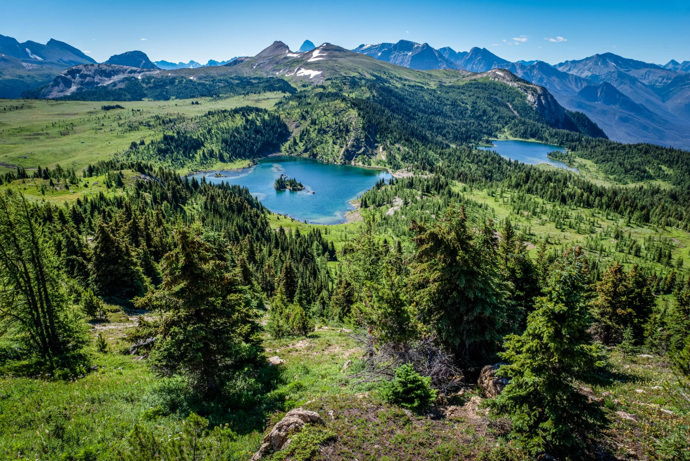

← Sunshine Meadows
🥾 Rock Isle Lake
Sunshine Meadows
⭐ Sunshine Meadows에서 가장 인기 있는 대표 트레킹 코스

📅 우리 일정
Day 5 오후 (기본 추천 코스)
🏞 기대 풍경
💎 Rock Isle Lake의 에메랄드빛 호수
🌼 여름철 야생화 초원
🏔 로키 산맥 파노라마
🌲 완만한 고산 초원 산책길
📸 Sunshine Meadows 대표 포토 스팟
📏 기본 정보
🚶 걷는 거리
왕복 약 3.5km
⏱ 걷는 시간
약 1~1.5시간
💪 난이도
쉬움
📈 고도차
약 120m
🚻 편의시설
✔ Sunshine Village 주차장
✔ 곤돌라 및 Standish Chairlift
✔ 화장실 (베이스 및 상부)
✔ 카페 및 레스토랑
🎒 준비물
👟 편한 운동화 또는 트레킹화
💧 물 500ml~1L
🧥 얇은 바람막이
🧴 선크림 및 선글라스
📷 카메라
💡 여행 Tip
✔ Sunshine Meadows를 처음 방문한다면 가장 먼저 추천하는 코스입니다.
✔ Rock Isle Lake 전망대는 사진 촬영 명소이므로 잠시 여유를 갖고 풍경을 즐겨보세요.
✔ 대부분의 길이 잘 정비되어 있어 가족 여행객도 부담 없이 걸을 수 있습니다.
✔ 시간이 충분하다면 Standish Viewpoint까지 이어서 다녀오는 것도 추천합니다.
✔ 오후에는 소나기나 안개가 생길 수 있어 오전 방문이 가장 좋습니다.
📍 Google Maps
← Sunshine Meadows